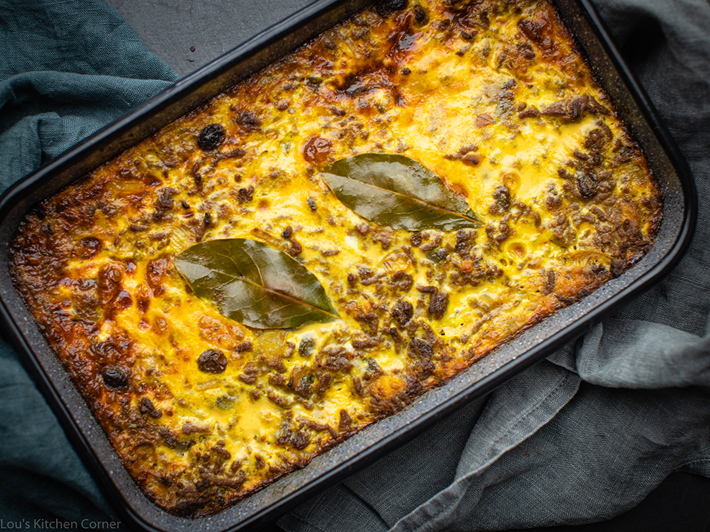

Bobotie

Description
This hearty dish can be traced to similar meat and egg based meals seen in Roman antiquity and more recently spicy Indonesian dishes.
Since then it has been adopted by South Africa's Cape Malay population, from which it has undergone many alterations to become what it is today; a meal shared and adored by families across South Africa's wider population.
Ingredients
The following ingredients are necessary:
- 1 kg minced beef or lamb
- Brown or white bread
- 375 ml Milk
- 25 ml olive oil
- 2 sliced onions
- 2 crushed garlic cloves
- 1 1/2 tbsp curry powder
- 1/2 tsp salt
- 1 1/2 tbsp fruit chutney
- 1 tbsp smooth apricot jam
- 1 tbsp worcestershire sauce
- 1 tsp tumeric
- 1 1/2 tbsp brown vinegar
- 6 tbsp sultanas
- 3 eggs
- Bay leaves
- Cooked rice, served as side dish
Steps
Step-by-step instructions to create recipe:
- Soak bread in milk
- Grease a large baking dish and heat oven to 180 degrees celsius.
- Warm a large, wide casserole pot over medium heat, add oil and fry the garlic and onions until the onions are soft.
- Add curry powder, salt, chutney, jam, Worcestershire sauce, tumeric and vinegar, and mix together.
- Drain the milk from your soaked bread (keep the drained milk) and mash the bread. Then add the bread to pan together with mince and sultanas.
- Cook over low heat, stirring, until the meat is cooked, then remove it from stove.
Now add 1 beaten egg and mix everything together well. Lastly, spoon into a greased baking dish, approx 28 x 16 cm baking dish to the top.
- Beat the remaining 2 eggs with the leftover drained milk (hopefully around 300 ml, or a little more).
Pour over meat mixture and put a few bay leaves on top.
- Bake uncovered in 180C for approximately 35 mins or until set (nicely browned).
- Serve with rice, chutney, bananas, and nuts.
Nice, now it's time to dig in.

Enjoy!
To see our other delicious recipes click here.
Note: This recipe was sourced from the following website.